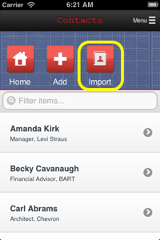

|
|
Introducing ReferralWire's New Contact Photo Finder
A recent survey showed that most people who walk out of a networking event with a stack of business cards can't remember the faces of the people who gave them the cards. Sound familiar?
It's no mystery: neuroscientists have proven that humans have evolved to recognize faces more easily than other forms of information. In a sales situation, matching a face to a name is often the difference between picking up the thread of a conversation with potentially valuable contact -- and setting their card aside in another untouched stack.
ReferralWire is pleased to announce it's new Contact Photo Finder feature which automatically searches the web for a photograph that matches the email address of each record in your ReferralWire contact list. The next time you add new contacts to your ReferralWire list you can immediately add their photos with the click of a button.
|
|
Importing Contacts into ReferralWire is a Piece of Cake
ReferralWire enables to you to import your contacts into the application quickly and easily through any of the following:
- Microsoft Outlook
Simply open the ReferralWire web application with Internet Explorer, go to Menu > Contacts and click the Import button. The Import Wizard will guide you the rest.
- LinkedIn, Google, MacIntosh Address Book and other
sources that support an export to the VCard format. The VCard file format has become the most widely used standard for exporting and importing Contacts. Export one or several hundred contacts to a VCard file from one of these sources and import them all at once with the ReferralWire import wizard. No field mapping is necessary - just click the button.
- Your Android or Apple Smartphone Importing contacts from your phone couldn't be easier. Download the ReferralWire iPhone or Android application from the Apple AppStore or Google Play. Import all of your phone contacts with the click of a single button.
For more information on how to import contacts into ReferralWire -- including details on your browser settings, etc. -- see our online help.
|

|
|
|
Generate a Consistent Stream of Quality Referrals
Many professionals are forced to juggle bringing in new business while meeting the demands of existing customers. Effective networking is critical -- but who has time for it?
ReferralWire reduces the time investment and increases the effectiveness of your networking efforts. Our application helps you find and build a trust-based relationship with other businesses that share your goals and clientele - without tedious meetings that don't yield results.
We look forward to serving you!
Sincerely,
Peter Thorson
CEO and Co-founder,
ReferralWire
|
|
| For more information contact info@referralwire.com |